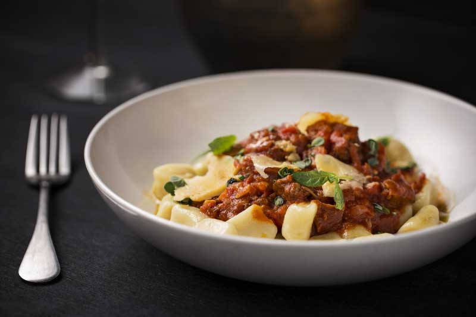

Gnocchi with lamb ragout

Description
Gnocchi with lamb ragout is a comforting and rich dish that blends tender, pillowy gnocchi with a savory,
slow-cooked lamb ragout. The gnocchi, made from soft potatoes, provides a light, fluffy texture that perfectly soaks
up the rich flavors of the ragout. The lamb, cooked until melt-in-your-mouth tender, is simmered with tomatoes, herbs,
and a touch of red wine, creating a hearty, flavorful sauce. The combination of the delicate gnocchi and the robust
ragout creates a satisfying, comforting meal, ideal for cozy evenings or special occasions.
Ingredients
- 1 leg of lamb, cut in pieces
- 1/2 carrot in cubes
- 1 onion
- 1/2 chopped bell pepper
- 3 cloves garlic
- salt
- beef broth 1 cup
- tomato sauce 1 cup
- white wine 1/2 cup
- 3 bay leaves
- potato gnocchi
- sprigs of fresh oregano
- Parmesan or Sardinian cheese
Steps
- Heat a small pot, add a little olive oil and sauté the carrot, onion and bell pepper.
- Minutes later add the garlic and a little salt.
- When the garlic begins to release its perfume add the broth, the tomato sauce, the wine and the bay leaves, and cook
everything for 1 hour, until the meat is very tender.
- Prepare the gnocchi (they are ready when they rise), serve with the ragout and finish with fresh oregano leaves and
parmesan flakes.